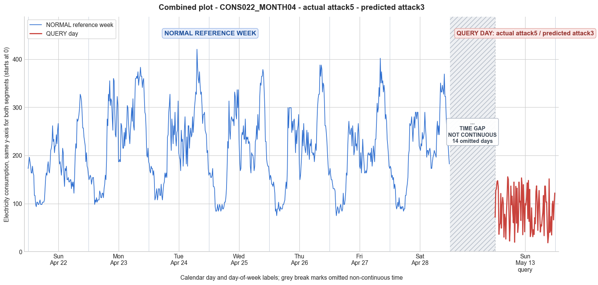

CONS022_MONTH04 · actual attack5 · predicted attack3
- Pair
- CONS022_MONTH04
- GT
- attack5
- Prediction
- attack3
- Binary GT
- attacked
- Binary Prediction
- attacked
- Source
- E010
- Parse
- stored
- Date
- 2012-05-13
- Weekday
- Sunday
- Latency
- 2.34 min
- Tokens
- 10059

Final output
Classification: - Manipulated Identified Attack: - Most Likely: Attack 3 - Confidence: High - Reasoning: The query day shows an overall reduced magnitude (mean 86.65 vs reference week means 181–238) and an erratic pattern with many extremely low readings (min 18.43, far below reference mins 74–107) and occasional moderate peaks up to 155. This is inconsistent with Attack 1 (constant multiplier) because the ratio between query and reference varies widely across intervals. Attack 2 and IEEE require zero readings, which are absent. Attack 4 implies a single continuous reduction period, but the query day has scattered dips. Attack 5 would generate completely random values, yet some temporal structure resembling a daily load pattern persists, making per-sample multiplicative distortion (Attack 3) the best fit. The random per-sample scaling explains both the non-uniform reduction and the preserved but noisy shape of the original consumption profile. Attack_Behavior_Explanation: - How consumption values are manipulated relative to the normal week: Each 15-minute consumption sample is multiplied by a different random factor between 0 and 1, independently chosen per reading. This causes some readings to remain moderately high (when the factor is near 1) while others are drastically reduced to very low values (when the factor is near 0). The overall effect is a distorted version of the original daily pattern with many sharp drops and moderate peaks. - Impact on magnitude and trend: Magnitude is reduced on average, but the amount of reduction varies irregularly. The trend is altered: the underlying daily rhythm is still faintly visible, but it is heavily disrupted by frequent low-value interruptions, making the load shape appear highly erratic and no longer a typical customer profile. - Possible technical causes: Meter bypass, magnetic interference, reverse current, and false data injection can all produce such per-sample multiplicative distortions.
Prompt
You are a domain expert in smart grid security and electricity theft analysis, with deep knowledge of non-technical loss (NTL) attack patterns in smart meters. You are given: 1. A plot of one week of original (normal) energy consumption for a smart meter, provided as context for the customer's typical consumption behavior. 2. A plot of one day of energy consumption for the same smart meter, which may or may not be manipulated. Below are common attack types, each defined by how consumption values are altered, their impact on magnitude and trend, and their possible technical causes. Attack 0: Generated by replacing all electricity consumption samples with zero values for the entire observation duration. Simulates a scenario where no energy usage is reported at all. May be caused by a total meter bypass or severe meter malfunction. Completely eliminates both the trend and magnitude of the consumption profile. Attack 1: Multiplies the actual energy consumption by a constant random value between (0,1). The lower the factor, the higher the severity. Can be triggered by meter bypass, magnetic interference, reverse current, and false data injection. The consumption trend remains the same but the magnitude is uniformly reduced. Attack 2: Generated by replacing consumption samples with zeros for a random duration. Also known as an on-off attack. Can be caused by full meter bypass, false data injection, and reverse current. Changes both the trend and amplitude. Attack 3: The actual consumption is multiplied by different random factors between 0 and 1, with a unique factor per sample. Similar to Attack 1 but the scaling factor varies per reading. Caused by meter bypass, magnetic interference, and reverse current. Changes both the trend and amplitude. Attack 4: Simulates energy theft over a randomly selected period within the observation window. All measurements in that period are reduced. Caused by meter bypass, magnetic interference, reverse current, and false data injection. Changes both the trend and amplitude. Attack 5: Each sample is replaced by a false value obtained by multiplying the average normal consumption by a random variable between 0 and 1, with a different variable per sample. Caused by false data injection. Produces a completely different pattern from the original consumption profile, changing both trend and magnitude. Attack 6: A random cut-off point is selected and all consumption values above it are replaced by that cut-off value. The attacker avoids exceeding a predefined maximum limit. Mainly caused by false data injection. Changes both the trend and amplitude. Attack 7: A random cut-off point is subtracted from each sample; if the result is negative, zero is reported. Similar to Attack 6 but replaces exceeding values with zero instead of the cut-off point. May be caused by false data injection or total meter bypass. Does not change the trend but reduces overall consumption. Attack 9: All samples are replaced by the average daily energy consumption, resulting in a flat constant profile. Easily detectable because constant consumption does not reflect normal customer behavior. Caused by false data injection. Eliminates all trends. Attack 10: Reverses the consumption pattern without reducing the total amount. Applicable when the electricity company uses time-varying pricing, allowing the attacker to shift high consumption to off-peak periods. Caused by false data injection. Changes the trend without decreasing total consumption. Attack 12: The attacker replaces their consumption pattern with that of a lower-consuming user. The legitimate user unknowingly pays the adversary's electricity bill. Caused by false data injection. Attack IEEE: For each 15-minute interval across the entire day, the consumer either reports the actual electricity consumption or substitutes it with zero. The result is a profile where some intervals reflect real consumption while others are zeroed out, creating an irregular pattern across the full day. May be caused by false data injection. Changes both the trend and amplitude. Given the two plots, determine: 1. Whether the day is attacked or original - compare the flagged day against the normal week and assess whether the consumption pattern is consistent with normal behavior or shows signs of manipulation. If the day is consistent with the customer's typical consumption behavior, classify it as original and provide no further analysis. If manipulation is detected, proceed to point 2. 2. Which attack type this most likely is - identify the single most probable attack and justify your choice based on how the flagged day deviates from the normal week. 3. The behavior of the identified attack - explain how the consumption values are manipulated, their impact on magnitude and trend, and the possible technical causes behind this type of attack. Output Format: Classification: - Original | Manipulated Identified Attack: (fill only if manipulated) - Most Likely: Attack X - Confidence: High | Medium | Low - Reasoning: Why it matches Attack X and why Attack Y and Attack Z were ruled out (list top 2 alternatives considered) Attack_Behavior_Explanation: (fill only if manipulated) - How consumption values are manipulated relative to the normal week - Impact on magnitude and trend - Possible technical causes
Reasoning content
We are asked to determine if the query day (DAY_ID=0) is attacked or original. Given reference week (7 days) and query day. The reference week shows typical consumption patterns. Query day has min=18.43, max=155.53, std=39.79, mean=86.65. Reference week days have means around 181-238, much higher. Min values are around 74-107. Query day min is 18.43, much lower. Max is 155.53 vs typical max around 327-420. So magnitude is significantly reduced. The pattern: looking at query day values: start at 71.5, then peaks around 155.53 at reading 21 (around 5:15am? 96 intervals, so 15-min each, reading 1 is 00:00-00:15, reading 21 is 05:00-05:15? Actually reading 1 is 0:00, reading 21 is 5:00? Wait: 96 readings, 24*4=96. So reading index 1 = 00:00-00:15, index 96 = 23:45-24:00. Query day values: first few: 71.5, 127.77, 130.52, 145.76, 147.49, 134.29, 36.12... That's erratic. It has spikes but overall lower. There are many low values like 18.43, 22.07, 19.66 etc. The pattern doesn't resemble a typical daily consumption with morning/evening peaks. It seems somewhat erratic with many low dips. The reference week days show a clear pattern: typically low overnight (around 100-150), then a morning rise (maybe 200-300), then midday dip? Actually look at Day 0 reference: starts at 172.9, then goes up to 327.1 later, with some variation. But query day starts lower (71.5), then goes up to 155.53, then drops to 36.12, etc. It looks like some readings are drastically reduced, possibly to zero-like values? The min is 18.43, not zero, but very low. There is no zero value, but many values are in 30-60 range. The reference week mins are around 74-107, so query day shows many values well below normal min. So magnitude is reduced. The trend seems altered: instead of smooth daily pattern, it's erratic with spikes and dips. This looks like attack, likely some reduction. Which attack? Attack 0 would be all zeros. Not this. Attack 1 multiplies by constant (0-1). That would preserve relative shape. Does query day shape resemble any reference day multiplied by a factor? Compute mean ratio: query mean 86.65, reference week means ~181-238. Ratio roughly 0.36-0.48. If multiplied by constant, the relative pattern would be identical, but query day pattern seems more erratic. For example, reference Day 0 (Sunday) has min 93.46, max 327.10. Query day min 18.43, max 155.53. If multiply Day 0 by 0.4, min would be ~37.38, max ~130.84. That's close? Query max 155 is a bit higher, min 18.4 lower. But pattern of Day 0: starts at 172.9, then 182, 196, etc. Scaled by 0.4: 69.16, 72.9, 78.5... Query day starts at 71.5, then 127.77? That's too high. Actually Day 0 reference readings: first few: 172.9, 182.24, 196.26, 186.92, 177.57, 163.55, 163.55, 177.57... Scaled by 0.4: 69.16, 72.9, 78.5, 74.77, 71.03, 65.42, 65.42, 71.03... Query day: 71.5, 127.77, 130.52, 145.76, 147.49, 134.29, 36.12... That doesn't match: after the first value, query jumps to 127.77 which is much higher than scaled reference. So it's not a constant multiplicative factor. Attack 2: zero for random durations. Not zero, but low values. Attack 3: multiplied by different random factors per sample. That could produce an erratic pattern with reduced magnitude overall. Attack 4: reduction over a randomly selected period. Could produce periods of low values and periods of maybe less reduction? Attack 5: replaced by false values using average normal consumption * random 0-1. That would produce random values between 0 and average. But here average is low (86.65), but the pattern shows some high spikes (155). The average normal consumption is around 200, so random 0-1 would give max up to 200, but the values are not completely random; they seem to have some structure, perhaps based on original but with dips. Attack 6: cut-off, above a value is replaced by that value. That would create a flat top. Query day max is 155.53, only a few readings near that, not a flat top. Attack 7: subtract a cut-off, negative -> 0. That would produce zeros and reduced values. Min is 18.43, no zeros. Attack 9: all samples replaced by average, flat. Not. Attack 10: reversed pattern, unlikely. Attack 12: replaced with lower-consuming user. That would show a different but plausible pattern. The query day might be consistent with a low-consuming user? But the reference week is a specific customer with certain pattern. The query day pattern is erratic, not a typical low-consuming household pattern (which would be smoother). Attack IEEE: for each 15-min interval, either actual or zero. That would produce zeros interspersed. Here no zeros, just low values. So what fits best? Attack 3: multiply each sample by a different random factor. That would give a scaled version with varying reduction, causing erratic changes. The pattern might still retain some shape like peaks where original had peaks but reduced differently. Looking at query day: there is a peak around 155 at reading 21, then later peaks of ~147 at reading 22? Actually 155.53 at reading 21, then 150.58 at 22, then drop to 81.95. Another peak at 144.6 at reading 29, then 144.62 at 39, etc. It seems there are some elevated readings but many dips. Reference week Day 0 (Sunday) might be the same weekday? Query day is dow=6 (Sunday), cal_month=5, dom=21, so it's a Sunday in May. Reference week has Day 0 also Sunday (dow=6), but in April (month=4). So same day of week, different month. Patterns might be similar. Reference Sunday (Day 0) has a morning rise starting around reading 25? Let's check Day 0: readings: first overnight: 172.9, 182.24, ... actually starts high and then dips? Let's index: Day 0 readings: indices 1-96: 1:172.9,2:182.24,3:196.26,4:186.92,5:177.57,6:163.55,7:163.55,8:177.57,9:163.55,10:158.88,11:116.82,12:116.82,13:98.13,14:93.46,15:102.8,16:102.8,17:98.13,18:98.13,19:102.8,20:107.48,21:98.13,22:98.13,23:98.13,24:102.8,25:102.8,26:102.8,27:107.48,28:130.84,29:154.21,30:163.55,31:158.88,32:177.57,33:186.92,34:168.22,35:163.55,36:182.24,37:210.28,38:214.95,39:224.3,40:261.68,41:228.97,42:233.64,43:205.61,44:219.63,45:219.63,46:242.99,47:224.3,48:252.34,49:266.36,50:210.28,51:182.24,52:186.92,53:172.9,54:158.88,55:177.57,56:214.95,57:205.61,58:158.88,59:135.51,60:172.9,61:168.22,62:177.57,63:149.53,64:149.53,65:154.21,66:144.86,67:144.86,68:149.53,69:149.53,70:130.84,71:144.86,72:135.51,73:144.86,74:121.5,75:154.21,76:200.93,77:224.3,78:214.95,79:275.7,80:271.03,81:275.7,82:285.05,83:299.07,84:327.1,85:322.43,86:313.08,87:289.72,88:257.01,89:257.01,90:238.32,91:228.97,92:219.63,93:186.92,94:205.61,95:177.57,96:172.9. So a typical Sunday: starting at 172.9, then declines to a low around 93.46 at 14 (3:30am?), then rises to around 163.55 by 30-32, then a daytime peak around 261.68 at 40 (10am), then another high peak around 327.1 at 84 (21:00). So two peaks: morning ~10am, evening ~9pm. Query day pattern: starts 71.5 (half of reference start), then increases to 145.76 at reading 4, then drops to 36.12 at reading 7, then erratic. There is a peak at reading 21: 155.53 (around 5:15am), which is earlier than reference morning peak. Then another peak at reading 29: 144.6 (7:15am), then later at reading 39: 144.62 (9:45am), then at reading 43: 153.26 (10:45am), then at reading 46: 139.25 (11:30am?) Not exactly aligned. It's erratic and many readings are very low between peaks, like 18.43 at reading 87. So the magnitude is reduced overall, and the pattern is heavily distorted with dips to very low values. This looks like an on-off attack (Attack 2) but not completely zero; maybe "zeros" were replaced by very low values instead of zero? Attack 2 definition: "Generated by replacing consumption samples with zeros for a random duration." But here we see low values like 18.43, not zero. Could be a variation where they are replaced by a very small value, but the attack description says zeros. Attack IEEE: "For each 15-minute interval across the entire day, the consumer either reports the actual electricity consumption or substitutes it with zero." Again zeros. So not exactly zeros. Attack 4: "Simulates energy theft over a randomly selected period within the observation window. All measurements in that period are reduced." That could reduce values but not necessarily to zero, just reduced. So Attack 4 might reduce to a lower magnitude, possibly by a factor or by a cut-off. The query day shows many low values (30-70) and some peaks up to 155. Could be that during a period (maybe multiple periods) the readings are reduced by a factor or set to a low value. But it's not a single continuous period; there are multiple dips throughout the day. Attack 4 says "randomly selected period" - could be one period. So maybe not. Attack 3: multiplied by different random factors per sample. That would produce a pattern where each reading is original * random(0,1). That could explain why some readings are low (random factor small) and some are moderate (factor closer to 1). But how to verify? Could compare query day to a scaled version of reference Sunday if we assume similar consumption pattern across Sundays? Reference Sunday (Day 0) has a pattern. If we compute ratio query/original for each reading, what do we get? Unfortunately we don't have the original for that exact day. But we can compare with the reference Sunday assuming the consumption pattern is similar. For each time index, we can compute the ratio of query to reference Day 0. Let's compute approximate ratios for a few indices (aligned by 96 readings). For reading 1: 71.5/172.9=0.413; reading 2: 127.77/182.24=0.701; reading 3: 130.52/196.26=0.665; reading 4: 145.76/186.92=0.780; reading 5: 147.49/177.57=0.831; reading 6: 134.29/163.55=0.821; reading 7: 36.12/163.55=0.221; reading 8: 55.07/177.57=0.310; reading 9: 58.64/163.55=0.358; reading 10: 120.87/158.88=0.761; reading 11: 48.9/116.82=0.418; reading 12: 97.26/116.82=0.833; reading 13: 112.78/98.13=1.149 (over 1, meaning query higher than reference, not possible if only reduction, but reference is a different day so not exact); reading 14: 99.99/93.46=1.07; reading 15: 30.19/102.8=0.294; etc. These ratios vary widely from 0.22 to over 1. So not a constant factor, and not consistently reduced compared to that Sunday. It's possible the specific day's original consumption was different (May vs April, maybe higher due to season? Spring both, but maybe warmer? Actually May could have higher consumption due to AC? Or lower? Not sure). The query day min 18.43 is extremely low, far below any reference min, so that indicates manipulation. Given the erratic nature and many sub-normal values, Attack 3 (varying factor per sample) seems plausible. Attack 4 (reduction over a period) might be one continuous period: look for a period of consistently low values. Query day: indices 7-8 low (36,55), then 9:58, 10:120 (high), 11:48, 12:97, 13:112, 14:99, 15:30, 16:77, 17:69, 18:26, 19:80, 20:112, 21:155, 22:150, 23:81, 24:22, 25:55, 26:136, 27:97, 28:115, 29:82, 30:60, 31:144, 32:19, etc. There are many isolated low readings. Not one continuous period; it's scattered. So Attack 4 less likely. Attack 2: zeros for random duration. Could be "zeros" but here they are low but not zero; maybe the attack replaced with very low values instead of exact zero? The definition says "zeros", but it could be approximated as very low numbers if the meter reports minimum non-zero? But the min is 18.43, which is not near zero. Attack 5: each sample replaced by false value = average normal * random(0,1). Average normal consumption from reference week? The overall mean of reference week is around 209? But query day mean is 86.65, which is less than half. If average normal is 209, random 0-1 would give mean ~104.5, close to 86.65, and max could be up to 209, query max 155 fits. But the pattern would be completely random, no correlation with time. Is query day random? Let's check autocorrelation. A quick look: there are some consecutive readings that change rapidly (e.g., 19.66, 82.96, 135.7, 59.32). It looks somewhat random but maybe there is some structure: peaks appear around morning? There is a cluster of higher values around readings 2-5 (127-147), then a dip, then another rise around 10 (120), then dips, then peaks at 21-22, then dip, then peak at 29-31, etc. It could be mimicking a consumption pattern with intermittent reductions. Attack 5 would produce noise without clear time-of-day pattern. But here we see some grouping of higher values. Could be that the original pattern still shines through with many random dips. That sounds like Attack 3 where some samples are multiplied by small factors. Attack 3: multiplier per sample different random between 0 and 1, independent? That would produce a pattern where each reading is original*sample factor. The factor might be drawn uniformly or something. The result would be a scaled version of original but with random jitter; the shape would be roughly maintained if factors are not too extreme, but with many dips where factor is very low. That matches: we see some values around 150 (close to original peaks scaled by maybe 0.5-0.8?), and some values as low as 18 (factor ~0.1). So Attack 3 is plausible. Attack IEEE: either actual or zero. No zeros, so not that. Attack 6: cut-off at max, not that. Attack 7: subtract cut-off, negative ->0, no zeros, so not. So most likely Attack 3. Confidence: High, because the pattern is erratic and magnitude reduced, consistent with per-sample random multipliers. Alternative considered: Attack 4 (period reduction) but not a single period. Attack 2 (on-off with zeros) but no zeros. Could be Attack 5, but Attack 5 would be completely random, while Attack 3 retains some shape. The presence of some coherent periods (like the initial rise) suggests the original pattern is somewhat preserved, which aligns with Attack 3. Thus classification: Manipulated. Identified Attack: Attack 3. Attack_Behavior_Explanation: Each sample multiplied by a different random factor (0,1), causing magnitude to be reduced non-uniformly, trend is altered but roughly follows original pattern with many dips. Technical causes: meter bypass, magnetic interference, reverse current, false data injection. We'll output as required.